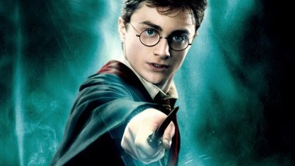

HARRY POTTER Y LA PIEDRA FILOSOFAL
Harry Potter y la piedra filosofal (título original en inglés, Harry Potter and the Philosopher’s Stone, excepto en Estados Unidos, donde se tituló Harry Potter and the Sorcerer’s Stone), es el primer libro de la serie literaria Harry Potter, escrito por la autora británica J. K. Rowling en 1997, que supuso además el debut de Rowling como escritora profesional.
La novela fue rechazada por varias editoriales hasta que la editorial Bloomsbury se decidió a publicarla. La edición británica salió a la venta el 26 de junio de 1997,seguida en Estados Unidos el 1 de septiembre de 1998 por la edición de Scholastic Corporation. La Editorial Salamandra obtuvo en el año 2000 los derechos para la publicación del libro en castellano. En el año 2007, una primera edición firmada por Rowling se subastó en Londres por 27.876 libras. Además, ese mismo año se comercializó una edición conmemorativa de la novela.
Harry Potter y la piedra filosofal ganó diversos premios literarios en el Reino Unido y en los Estados Unidos; en agosto de 1999, llegó a la cima de la lista best-sellers de ficción que aparece en el periódico The New York Times quedando entre los primeros puestos del listado durante la mayor parte de los años 1999 y 2000. Junto con el resto de la serie de Harry Potter, este volumen ha recibido las críticas de varios grupos religiosos y ha sido prohibido en algunos países debido a acusaciones de promover la brujería. Sin embargo, algunos comentaristas cristianos han escrito que el libro ejemplifica importantes conceptos valorados por la doctrina cristiana, incluido el poder de autosacrificio y la forma en que las decisiones de las personas forman su personalidad.
HARRY POTTER Y LA CAMARA SECRETA
Harry Potter y la cámara secreta (título original en inglés, Harry Potter and the Chamber of Secrets), es el segundo libro de la serie literaria Harry Potter, escrito por la autora británica J. K. Rowling en 1998.
La trama sigue el segundo año de Harry Potter en el Colegio Hogwarts de Magia y Hechicería, durante el cual una serie de mensajes en las paredes de los pasillos de la escuela advierten que la Cámara de los Secretos ha sido abierta y que el «heredero de Slytherin» matará a todos los alumnos que no provengan de familias con sangre mágica. Dichas amenazas se cumplen con ataques que dejan a los alumnos de la escuela «petrificados». Durante todo el año, Harry y sus amigos Ron Weasley y Hermione Granger investigan sobre los ataques, un hecho similar que había ocurrido años antes, lo cual lleva al protagonista a conocer más la historia de su mayor enemigo, lord Voldemort, quien había asesinado a sus padres cuando era un bebé.
El libro fue publicado en el Reino Unido el 2 de julio de 1998 por la editorial Bloomsbury y en los Estados Unidos el 2 de junio de 1999 por Scholastic Inc. La Editorial Salamandra, quien tiene los derechos de publicación para el idioma castellano, publicó el libro para España y los países de Hispanoamérica en octubre de 1999. A pesar de que Rowling tuvo dificultades para terminar la novela, ésta ganó grandes elogios y varios premios por parte de los críticos, lectores jóvenes y por la industria del libro; sin embargo, algunos críticos opinaron que la historia fue tal vez muy aterradora para los niños pequeños.